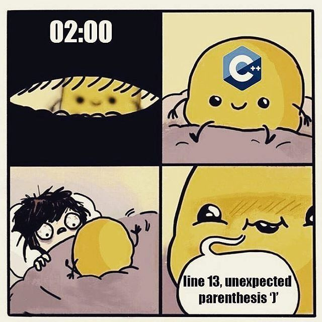

00. Link - We’re under attack! 23+ Node.js security best practices
01. Link - This one line of Javascript made FT.com 10 times slower
02. Link - 7 Javascript EEG Mind Reading Libraries for 2018
03. Link - The Age of “Node.js and…”
04. Link - Using SSE Instead Of WebSockets For Unidirectional Data Flow Over HTTP/2
05. Link - The Cost Of JavaScript In 2018
